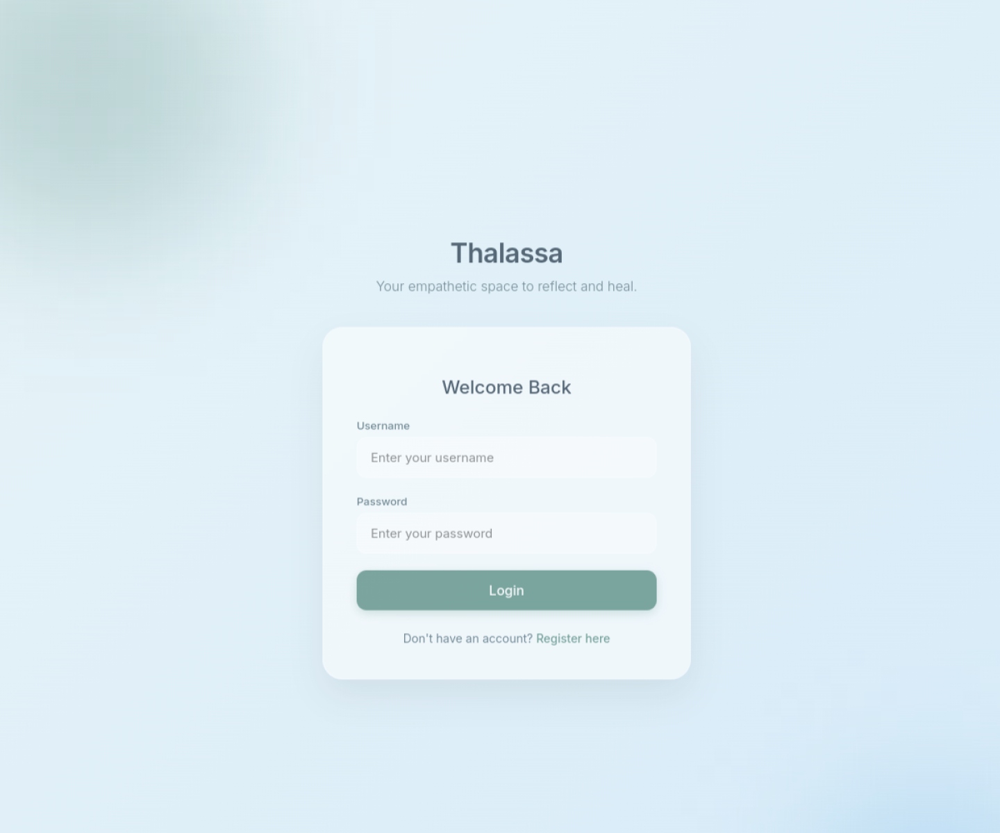

A full-stack wellness application combining authenticated LLM chat, persisted conversation history, mood records, private journal entries, and a curated resource library.
Problem and responsibility
Thalassa began as an exploration of stateful conversational interfaces. A useful wellness application needs more than a single prompt box: people need authentication, continuity, a private place to write, and a way to see patterns over time.
The project is explicitly an AI demonstration, not therapy, diagnosis, or crisis care. That boundary matters because empathetic language can make a system appear more capable and authoritative than it is. The application therefore combines supportive prompt guidance with a resource library and a visible disclaimer.

Application architecture
The backend is a Flask application with CORS, SQLAlchemy, Flask-JWT-Extended, and separate blueprints for users, moods, resources, and journals. The frontend consists of HTML/CSS and JavaScript views for login, registration, chat, journaling, mood tracking, and resources.
- User: stores credentials and owns all private records.
- ChatMessage: persists user and assistant messages with roles and timestamps.
- Mood: records a numeric or categorical emotional state over time for visualization.
- JournalEntry: stores timestamped private writing associated with one authenticated user.
- Resource: contains seeded grounding, breathing, and educational material.
Conversation flow
The chat endpoint requires a valid JWT, resolves the current user, persists the incoming message, and loads the ten most recent messages in chronological order. It then prepends a system prompt that asks the model to be patient, validating, non-judgmental, and concise, with an instruction to encourage professional support when severe crisis language appears.
The message array is sent to llama-3.1-8b-instant through the Groq client with temperature 0.7 and a 1,024-token output limit. The assistant reply is stored before it is returned, so page reloads can recover the conversation history.
recent = ChatMessage.query.filter_by(
user_id=user.id
).order_by(
ChatMessage.timestamp.desc()
).limit(10).all()
messages = [{"role": "system", "content": SYSTEM_PROMPT}]
messages.extend(
{"role": item.role, "content": item.content}
for item in reversed(recent)
)Journaling and mood data
The journal blueprint supports authenticated creation and retrieval of entries, ordered by timestamp. The mood routes follow the same ownership model: records are linked to the JWT identity and returned as a personal history. Chart.js turns that history into a time-series view in the browser.
These features do not feed directly into the LLM prompt in the current implementation. Keeping that distinction clear prevents the portfolio from claiming a level of memory or personalization that the source does not yet implement.
Security and privacy review
JWT protection and per-user database relationships establish a useful baseline, but sensitive wellness data requires a much higher production standard. The development configuration falls back to a default JWT secret when an environment variable is missing; production must refuse startup instead. SQLite data is not encrypted at the application layer, and the project does not yet include audit logs, retention controls, export/deletion workflows, rate limiting, or a formal threat model.
Prompt instructions are not a clinical safety system. A production wellness product would need expert-reviewed crisis handling, deterministic escalation rules, abuse testing, regional resources, privacy review, and continuous monitoring.
Interface and deployment
The deployed PythonAnywhere application uses a calm, low-contrast visual system intended to reduce cognitive load. Authentication gates the private views, while AJAX requests carry the JWT to the API. Flask serves both the frontend templates and JSON endpoints, which keeps deployment simple for a compact full-stack project.
Next steps
A stronger architecture would add secure secret enforcement, password reset and account deletion, encrypted storage, structured safety classifiers outside the generative model, summarized long-term memory with explicit user control, and test coverage for authorization boundaries. Mood and journal signals should only influence chat after informed consent and clear privacy controls.
Return to portfolio →